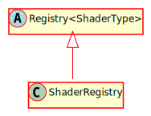

Hierarchy-Diagram
{kind=link}
Legend
 class
class
 abstract class
abstract class
Hierarchy
- Registry<ShaderType>
- ShaderRegistry
Index
Constructors
constructor
Creates a new map
Returns ShaderRegistry
Properties
Private registry
Static LABEL_
Static POINT_
Static RECT_
Static SPRITE_
Methods
add
Adds a value T stored at a key.
Parameters
key: string
The key of the item to be stored
value: ShaderType
The item to be stored
Returns void
clear
Clears the contents of the data structure
Returns void
delete
Deletes an item associated with a key
Parameters
key: string
The key at which to delete an item
Returns void
for
Iterates through all of the items in this data structure.
Parameters
func: ((key: string) => void)
Parameters
key: string
Returns void
Returns void
get
Get the value associated with a key.
Parameters
key: string
The key of the item
Returns ShaderType
The item at the key or undefined
has
Returns true if there is a value stored at the specified key, false otherwise.
Parameters
key: string
The key to check
Returns boolean
A boolean representing whether or not there is an item at the given key.
keys
Returns an array of all of the keys in this map.
Returns string[]
An array containing all keys in the map.
preload
Preloads all built-in shaders
Returns void
register
Registers a shader in the registry and loads it before the game begins
Parameters
key: string
The key you wish to assign to the shader
constr: (new (programKey: string) => ShaderType)
The constructor of the ShaderType
Parameters
programKey: string
Returns ShaderType
vshaderLocation: string
The location of the vertex shader
fshaderLocation: string
the location of the fragment shader
Returns void
register
Registers a shader in the registry. NOTE: If you use this, you MUST load the shader before use. If you wish to preload the shader, use registerAndPreloadItem()
Parameters
key: string
The key you wish to assign to the shader
constr: (new (programKey: string) => ShaderType)
The constructor of the ShaderType
Parameters
programKey: string
Returns ShaderType
Returns void
set
An alias of add. Sets the value stored at key to the new specified value
Parameters
key: string
The key of the item to be stored
value: ShaderType
The item to be stored
Returns void
to
Converts this map to a string representation.
Returns string
The string representation of this map.
A registry that handles shaders